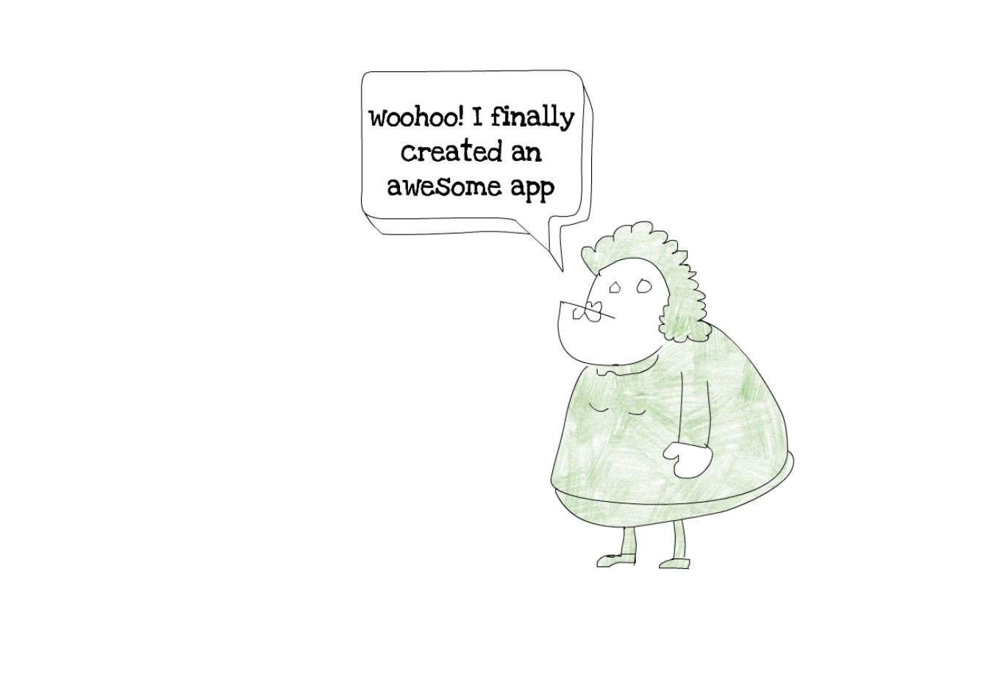

Workshop: Build a serverless meetup app using AWS Amplify
Learning web development is hard. Most of the time you start with HTML and spend much time to learn all of its tags. However, your web page looks like it's early 1990. You need to learn CSS to make it beautiful. It looks simple until you try to align two elements the way you want.
Finally, you move on to JavaScript to make your new web application interactive. Before you even grasp into its dynamic world of frameworks, you try to do something simple, such as calculating a sum of 0.1 and 0.2, and you don't get the result you expected. If you spent a few days trying to learn JavaScript, you most likely met its weird side.
Sometimes you start from the opposite side, and learn back end first, using either Node.js, PHP, Python, or some other language.
It doesn't matter which path you took, if you are tenacious enough, you'll manage to build your first web application. When you manage to do that, you'll feel like you have superpowers!
If you are like me, your first app will probably not be an award-winning web application, but the moment you finish it, it'll look like the best and most complex application ever. You should be proud of it, and show it to your friends.

You finally show your app to your friends, and they are happy for you. Then you want to show it to your good friend that lives far away. Wait, how do you send your masterpiece to your friend Ben, from Australia?
The answer is a server. You need some way to deploy your application to some type of server and make it globally available. That's not trivial. And deploying of your frontend application is just a first step. Your app often needs some kind of backend business logic, database, real time syncronization and many more things.
The problem
You are a group of developers that love local communities and meetups. Most of the local meetups use Meetup.com platform to share their awesome meetups and workshops. But recently Meetup.com announced changes in their pricing and charging RSVP fees for members.
You and your friends decided to build a quick replacement for meetup.com platform.
Note: Meetup.com announced that these fees will not affect all users, they'll test these changes in some states in US only.
Workshop
This workshop will teach you how you can use serverless architecture on Amazon Web Services (AWS) to build and deploy a simple meetup application.
Workshop organization
The idea of this workshop is to make your learning process just in time and interactive. It's an experiment that will teach you how to build serverless apps through the story and collaboration with other people around your table. We hope you'll like this approach, and we would love to hear your feedback in the end.